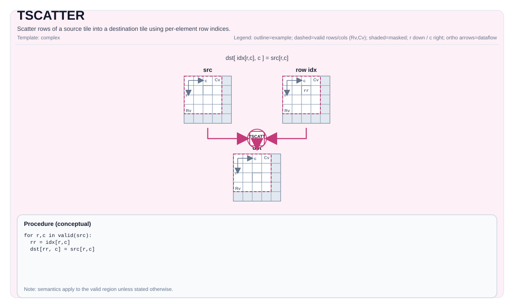

TSCATTER¶
Tile Operation Diagram¶

Introduction¶
TSCATTER provides two operation modes:
- Index-based Scatter: Scatter rows of a source tile into a destination tile using per-element row indices.
- Mask Scatter: Scatter source elements into destination with a mask pattern, interleaving zeros between elements. Supports both row-wise (
SCATTER_ROW) and column-wise (SCATTER_COL) scatter modes.
Math Interpretation¶
Index-based Scatter¶
For each source element (i, j), write:
If multiple elements map to the same destination location, the final value is implementation-defined (last writer wins in the current implementation).
Mask Scatter¶
For mask pattern P, scatter source elements with interleaved zeros. The scatter direction is controlled by ScatterAxis:
SCATTER_ROW (default)¶
Scatter along columns, expanding column dimension:
Where:
- DstTileData::ValidCol = SrcTileData::ValidCol × expansion_factor
- DstTileData::ValidRow = SrcTileData::ValidRow
SCATTER_COL¶
Scatter along rows, expanding row dimension:
Where:
- DstTileData::ValidRow = SrcTileData::ValidRow × expansion_factor
- DstTileData::ValidCol = SrcTileData::ValidCol
Expansion Factor¶
- For
P1010orP0101: expansion_factor = 2 - For
P0001,P0010,P0100, orP1000: expansion_factor = 4 - For
P1111: expansion_factor = 1 (equivalent toTMOV)
Assembly Syntax¶
Synchronous form:
%dst = tscatter %src, %idx : !pto.tile<...>, !pto.tile<...> -> !pto.tile<...>AS Level 1 (SSA)¶
%dst = pto.tscatter %src, %idx : (!pto.tile<...>, !pto.tile<...>) -> !pto.tile<...>AS Level 2 (DPS)¶
pto.tscatter ins(%src, %idx : !pto.tile_buf<...>, !pto.tile_buf<...>) outs(%dst : !pto.tile_buf<...>)C++ Intrinsic¶
Declared in include/pto/common/pto_instr.hpp:
Index-based Scatter¶
template <typename TileDataD, typename TileDataS, typename TileDataI, typename... WaitEvents>
PTO_INST RecordEvent TSCATTER(TileDataD& dst, TileDataS& src, TileDataI& indexes, WaitEvents&... events);Mask Scatter¶
template <MaskPattern maskPattern = MaskPattern::P1111, auto ScatterType = ScatterAxis::SCATTER_ROW,
typename DstTileData, typename SrcTileData, typename... WaitEvents>
PTO_INST RecordEvent TSCATTER(DstTileData& dst, SrcTileData& src, WaitEvents&... events);MaskPattern Enum¶
Defined in include/pto/common/type.hpp:
| Value | Pattern | Description | Expansion Factor |
|---|---|---|---|
P0101 |
01010101... | Take first element every 2 elements | ×2 |
P1010 |
10101010... | Take second element every 2 elements | ×2 |
P0001 |
00010001... | Take first element every 4 elements | ×4 |
P0010 |
00100010... | Take second element every 4 elements | ×4 |
P0100 |
01000100... | Take third element every 4 elements | ×4 |
P1000 |
10001000... | Take fourth element every 4 elements | ×4 |
P1111 |
11111111... | Take all elements (equivalent to TMOV) | ×1 |
ScatterAxis Enum¶
Defined in include/pto/common/type.hpp:
| Value | Description |
|---|---|
SCATTER_ROW |
Scatter along columns, expanding column dimension (default) |
SCATTER_COL |
Scatter along rows, expanding row dimension |
Constraints¶
Index-based Scatter¶
- Implementation checks (A2A3):
TileDataD::Loc,TileDataS::Loc,TileDataI::Locmust beTileType::Vec.TileDataD::DType,TileDataS::DTypemust be one of:int32_t,int16_t,int8_t,half,float16_t,float32_t,uint32_t,uint16_t,uint8_t,bfloat16_t.TileDataI::DTypemust be one of:int16_t,int32_t,uint16_toruint32_t.- No bounds checks are enforced on
indexesvalues. - Static valid bounds:
TileDataD::ValidRow <= TileDataD::Rows,TileDataD::ValidCol <= TileDataD::Cols,TileDataS::ValidRow <= TileDataS::Rows,TileDataS::ValidCol <= TileDataS::Cols,TileDataI::ValidRow <= TileDataI::Rows,TileDataI::ValidCol <= TileDataI::Cols. TileDataD::DTypeandTileDataS::DTypemust be the same.- When size of
TileDataD::DTypeis 4 bytes, the size ofTileDataI::DTypemust be 4 bytes. - When size of
TileDataD::DTypeis 2 bytes, the size ofTileDataI::DTypemust be 2 bytes. - When size of
TileDataD::DTypeis 1 bytes, the size ofTileDataI::DTypemust be 2 bytes.
- Implementation checks (A5):
TileDataD::Loc,TileDataS::Loc,TileDataI::Locmust beTileType::Vec.TileDataD::DType,TileDataS::DTypemust be one of:int32_t,int16_t,int8_t,half,float16_t,float32_t,uint32_t,uint16_t,uint8_t,bfloat16_t.TileDataI::DTypemust be one of:int16_t,int32_t,uint16_toruint32_t.- No bounds checks are enforced on
indexesvalues. - Static valid bounds:
TileDataD::ValidRow <= TileDataD::Rows,TileDataD::ValidCol <= TileDataD::Cols,TileDataS::ValidRow <= TileDataS::Rows,TileDataS::ValidCol <= TileDataS::Cols,TileDataI::ValidRow <= TileDataI::Rows,TileDataI::ValidCol <= TileDataI::Cols. TileDataD::DTypeandTileDataS::DTypemust be the same.- When size of
TileDataD::DTypeis 4 bytes, the size ofTileDataI::DTypemust be 4 bytes. - When size of
TileDataD::DTypeis 2 bytes, the size ofTileDataI::DTypemust be 2 bytes. - When size of
TileDataD::DTypeis 1 bytes, the size ofTileDataI::DTypemust be 2 bytes.
Mask Scatter¶
- Implementation checks (A2A3):
DstTileData::Loc,SrcTileData::Locmust beTileType::Vec.DstTileData::DType,SrcTileData::DTypemust be one of:int32_t,int16_t,int8_t,half,float16_t,float32_t,uint32_t,uint16_t,uint8_t,bfloat16_t.DstTileData::DTypeandSrcTileData::DTypemust be the same.maskPatternmust be in rangeP0101toP1111.- Static valid bounds:
DstTileData::ValidCol <= DstTileData::Cols,SrcTileData::ValidCol <= SrcTileData::Cols,DstTileData::ValidRow <= DstTileData::Rows,SrcTileData::ValidRow <= SrcTileData::Rows. P1111mode is equivalent toTMOV: requiresvalidRowandvalidColto match respectively, implemented internally viaTMOV_IMPL.
- Implementation checks (A5):
DstTileData::Loc,SrcTileData::Locmust beTileType::Vec.DstTileData::DType,SrcTileData::DTypemust be one of:int32_t,int16_t,int8_t,half,float16_t,float32_t,uint32_t,uint16_t,uint8_t,bfloat16_t.DstTileData::DTypeandSrcTileData::DTypemust be the same.maskPatternmust be in rangeP0101toP1111.- Static valid bounds:
DstTileData::ValidRow <= DstTileData::Rows,DstTileData::ValidCol <= DstTileData::Cols,SrcTileData::ValidRow <= SrcTileData::Rows,SrcTileData::ValidCol <= SrcTileData::Cols. - Runtime assertions for
SCATTER_ROW:SrcTileData::ValidRowmust equalDstTileData::ValidRow.SrcTileData::ValidColmust equalDstTileData::ValidCol * expansion_factor, where expansion_factor depends on mask pattern (1 for P1111, 2 for P1010/P0101, 4 for P0001/P0010/P0100/P1000).
- Runtime assertions for
SCATTER_COL:SrcTileData::ValidColmust equalDstTileData::ValidCol.SrcTileData::ValidRowmust equalDstTileData::ValidRow / expansion_factor, where expansion_factor depends on mask pattern (1 for P1111, 2 for P1010/P0101, 4 for P0001/P0010/P0100/P1000).
Important Notes¶
Warning: Before scattering, the destination tile buffer is fully initialized to zero across the entire tile size (
Rows × Cols), not limited byValidRowandValidCol. This means: - The entire UB buffer allocated fordstTilewill be written with zeros. - Elements outsideValidRow/ValidColwill be zero after the operation. - Ensure the destination tile's UB buffer does not overlap with other active data.
Examples¶
Index-based Scatter (Auto)¶
#include <pto/pto-inst.hpp>
using namespace pto;
void example_auto() {
using TileT = Tile<TileType::Vec, float, 16, 16>;
using IdxT = Tile<TileType::Vec, uint16_t, 16, 16>;
TileT src, dst;
IdxT idx;
TSCATTER(dst, src, idx);
}Index-based Scatter (Manual)¶
#include <pto/pto-inst.hpp>
using namespace pto;
void example_manual() {
using TileT = Tile<TileType::Vec, float, 16, 16>;
using IdxT = Tile<TileType::Vec, uint16_t, 16, 16>;
TileT src, dst;
IdxT idx;
TASSIGN(src, 0x1000);
TASSIGN(dst, 0x2000);
TASSIGN(idx, 0x3000);
TSCATTER(dst, src, idx);
}Mask Scatter (Auto)¶
#include <pto/pto-inst.hpp>
using namespace pto;
void example_mask_auto() {
// P1010: destination size = source size × 2
using SrcTileT = Tile<TileType::Vec, half, 16, 64>;
using DstTileT = Tile<TileType::Vec, half, 16, 128>;
SrcTileT src;
DstTileT dst;
TSCATTER<MaskPattern::P1010>(dst, src);
}
void example_mask_p1000() {
// P1000: destination size = source size × 4
using SrcTileT = Tile<TileType::Vec, float, 16, 64>;
using DstTileT = Tile<TileType::Vec, float, 16, 256>;
SrcTileT src;
DstTileT dst;
TSCATTER<MaskPattern::P1000>(dst, src);
}
void example_mask_scatter_col() {
// SCATTER_COL: scatter along rows, expanding row dimension
// P1010: destination rows = source rows × 2
using SrcTileT = Tile<TileType::Vec, half, 64, 16>;
using DstTileT = Tile<TileType::Vec, half, 128, 16>;
SrcTileT src;
DstTileT dst;
TSCATTER<MaskPattern::P1010, ScatterAxis::SCATTER_COL>(dst, src);
}Mask Scatter (Manual)¶
#include <pto/pto-inst.hpp>
using namespace pto;
void example_mask_manual() {
using SrcTileT = Tile<TileType::Vec, half, 16, 64>;
using DstTileT = Tile<TileType::Vec, half, 16, 128>;
SrcTileT src;
DstTileT dst;
TASSIGN(src, 0x1000);
TASSIGN(dst, 0x2000);
TSCATTER<MaskPattern::P1010>(dst, src);
}
void example_mask_manual_scatter_col() {
// SCATTER_COL with manual binding
using SrcTileT = Tile<TileType::Vec, half, 64, 16>;
using DstTileT = Tile<TileType::Vec, half, 128, 16>;
SrcTileT src;
DstTileT dst;
TASSIGN(src, 0x1000);
TASSIGN(dst, 0x2000);
TSCATTER<MaskPattern::P1010, ScatterAxis::SCATTER_COL>(dst, src);
}ASM Form Examples¶
Auto Mode¶
# Auto mode: compiler/runtime-managed placement and scheduling.
%dst = pto.tscatter %src, %idx : (!pto.tile<...>, !pto.tile<...>) -> !pto.tile<...>Manual Mode¶
# Manual mode: resources must be bound explicitly before issuing the instruction.
# Optional for tile operands:
# pto.tassign %arg0, @tile(0x1000)
# pto.tassign %arg1, @tile(0x2000)
%dst = pto.tscatter %src, %idx : (!pto.tile<...>, !pto.tile<...>) -> !pto.tile<...>PTO Assembly Form¶
%dst = tscatter %src, %idx : !pto.tile<...>, !pto.tile<...> -> !pto.tile<...>
# AS Level 2 (DPS)
pto.tscatter ins(%src, %idx : !pto.tile_buf<...>, !pto.tile_buf<...>) outs(%dst : !pto.tile_buf<...>)